This document maps the implementation to the AIT-204 Topic 4 rubric. The assignment is graded across six criteria: the first four (14 points each) cover the ML pipeline, model and training, translation analysis, and ethics; the last two (7 points each) cover documentation/deployment and presentation.
| Criteria | Points | Implementation |
|---|---|---|
| ML Pipeline Implementation | 14 | Activity 1: preprocessing, vocabulary, encoding, padding, end-to-end pipeline |
| Model Architecture and Training | 14 | Activity 2: embeddings + classifier; Activity 3: training loop, loss curves, save |
| Translation Analysis and Cross-Lingual Evaluation | 14 | Activity 4: Translation Comparison tab; compare(); 10+ examples in report |
| Ethical Considerations | 14 | Report: bias, privacy, scale risks, cross-lingual harm, engineering responsibility |
| Documentation and Deployed Application | 7 | Commented code, architecture diagram, deployed app URL, written report |
| Presentation or Video | 7 | Demo app, design decisions, cross-lingual findings, model limitations |
The project is split into two layers: a frontend that handles what users see, and a
backend that does all the model work. The Streamlit app
(activity4_app.py) is the frontend, it builds the web page, collects user input, and
displays results. It never touches the model directly. Instead it passes the user's text to the backend
(model_service.py), which loads the saved model and returns a prediction. Training only
runs once (Activities 1–3); after that the app just loads the saved files and uses them.
Keeping the two layers separate means changes to one side don't break the other. For example, the Streamlit interface could be swapped out for a different website without touching any model code, and the model could be retrained or upgraded without changing the UI. The diagram below shows how the pieces connect.
Figure 1: Component dependency and data flow from training to deployed app.
File: activity1_preprocessing.py. Neural networks can only work with
numbers, they cannot read words directly. So before any review reaches the model, it has to be
converted into a list of numbers. This module handles that conversion and is used both when training
the model and when the live app receives a review from a user.
clean_text() starts by lowercasing the review and removing anything that isn't a
letter, punctuation, numbers, symbols, so "This Movie was GREAT!!!" becomes
"this movie was great". Then tokenize() splits that cleaned text into individual
words. Each word is then swapped out for a number using the Vocabulary lookup table;
any word the model has never seen before gets replaced with a special <UNK>
token. Finally, pad_sequence() makes every review exactly the same length by adding
zeros to short reviews or cutting off long ones, so all inputs to the model are the same size.
The flowchart below shows each step.
Figure 2: Preprocessing pipeline from raw string to batched tensor.
The Vocabulary class is built from the training data and gives each word a unique
number. Words that appear fewer than min_freq times are not given their own number;
they map to <UNK> instead. This keeps the vocabulary from getting too large
with rarely-used words. Two slots are always reserved: <PAD> (ID 0) is used to
fill blank positions when a review is shorter than max_length, and
<UNK> (ID 1) handles any word the model has not seen before. After training,
the vocabulary is saved to vocab.json so the deployed app uses the exact same
word-to-number mapping.
Figure 3: Vocabulary class (simplified UML).
Files: activity2_model.py defines the network; activity3_train.py
trains it on IMDB and saves the model, vocabulary, and config.
The model takes a list of word ID numbers and outputs a single score between 0 and 1, where values
near 1.0 mean positive and values near 0.0 mean negative. It processes a review in a few steps.
First, an Embedding layer converts each word ID into a list of 128 numbers that
capture something about what that word means, similar words end up with similar numbers. Next, all
those word vectors are averaged into one summary vector for the whole sentence, with padding tokens
left out of the average. That summary then passes through two fully connected layers (the same
structure as Topic 2's neural network), with a ReLU activation and Dropout layer in between.
Finally, a Sigmoid function squishes the output into the 0–1 range. save_model() and
load_model() handle saving and loading the trained weights so the app can reuse them.
Figure 4: Model data flow from token IDs to sentiment probability.
Activity 3 loads the IMDB dataset via Hugging Face datasets, builds the vocabulary from the
training texts using MIN_FREQ=5 to exclude rare words, and encodes and pads all sequences to
MAX_LENGTH=200. A SentimentClassifier is constructed with
EMBED_DIM=128, HIDDEN_DIM=64, and DROPOUT=0.5, then trained for 5 epochs
using Adam (lr=0.001) and BCE loss. After training, the script writes saved_model/model.pt,
saved_model/vocab.json, and saved_model/config.json for the app to load.
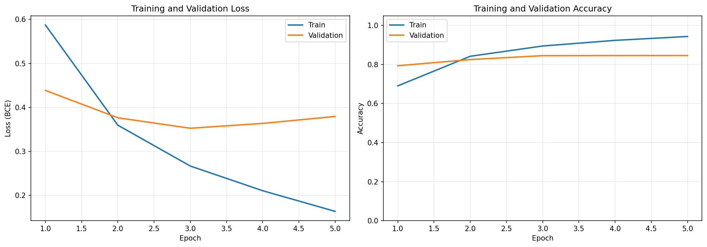
Figure 6: Training and validation loss (BCE) and accuracy over 5 epochs on IMDB.
Looking at the loss chart on the left, both lines drop during the first three epochs, which means the model is getting better at recognizing sentiment on both the training data and the reviews it has never seen before. After epoch 3, however, the training loss keeps falling while the validation loss starts to creep back up. This is called overfitting, the model starts memorizing specific word patterns from the training set instead of learning rules that work more generally.
The accuracy chart on the right tells the same story. Validation accuracy climbs from about 80% to
roughly 83% by epoch 3 and then levels off, while training accuracy keeps rising to
about 95%. That gap of roughly 12 percentage points shows the model performs noticeably better on data
it was trained on than on new data. Setting DROPOUT=0.5 helped slow this down, dropout
randomly turns off half the neurons during each training step, which forces the network to not rely too
heavily on any one word, but five epochs was still enough for some overfitting to occur. Stopping
training at epoch 3, when the validation loss was at its lowest (~0.35), would have given the
best-performing version of the model.
| Metric | Epoch 1 | Epoch 3 | Epoch 5 |
|---|---|---|---|
| Train Loss | ~0.59 | ~0.27 | ~0.15 |
| Val Loss | ~0.44 | ~0.35 (best) | ~0.38 |
| Train Accuracy | ~70% | ~88% | ~95% |
| Val Accuracy | ~80% | ~83% | ~83% |
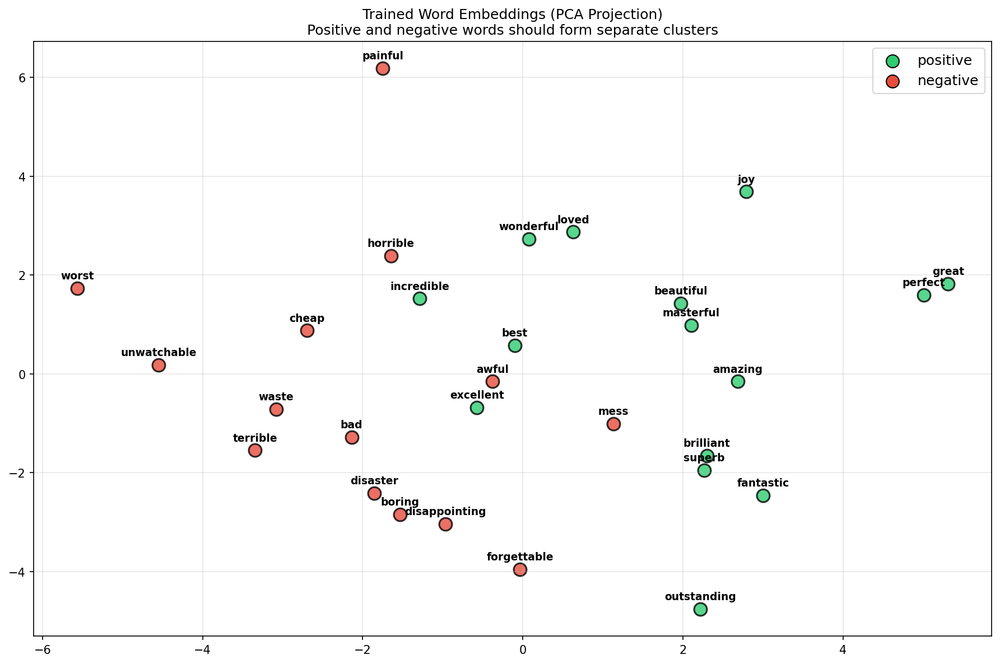
Figure 7: Each word's learned embedding compressed into 2D. Green = positive words, Red = negative words.
Each word in the vocabulary is stored as a list of 128 numbers (its embedding vector). To visualize what the model learned, those 128 numbers are compressed down to just 2 using a technique called PCA, so each word can be plotted as a single dot. If the model learned meaningful representations, positive and negative words should end up in different areas of the chart, and that is exactly what happened. Words like great, perfect, joy, amazing, and outstanding cluster toward the right, while words like worst, unwatchable, terrible, boring, and forgettable cluster toward the left. The model was never told which words were positive or negative, it figured this out on its own by seeing which words appeared in positively- and negatively-labelled reviews.
The chart also helps explain some of the translation experiment results. Words like incredible, horrible, best, and awful end up near the middle of the chart, meaning the model is not very sure about them on their own. When a translation swaps out a word that the model feels strongly about for one of these middle-ground words, the overall score can shift a lot, which is exactly what happened in Experiment 3 ("well" → "much", delta −0.612) and Experiment 10 ("had too many good movies" → "made many good films", delta +0.809). The model averages all the word scores together, so losing one strongly-opinionated word can flip the whole prediction.
The app is split into a backend service and a Streamlit frontend. The backend owns the model and vocabulary; the frontend owns the UI and calls the backend. No model logic lives in the UI code.
When the app starts, SentimentService loads three saved files: the model weights
(model.pt), the word-to-number lookup table (vocab.json), and the
configuration (config.json). predict(text) takes a raw review, runs it
through the full preprocessing pipeline, feeds it to the model, and sends back a dictionary with
the sentiment label, confidence score, raw probability, and the intermediate steps (cleaned text,
tokens, known word count) so the app can show them to the user.
compare(original, translated) runs predict() on both versions of a review,
calculates how much the score changed, notes whether the label flipped, and lists which words
appeared in one version but not the other. The diagram below shows the order of steps when a user
submits a review.
Figure 5: Sequence of calls for a single sentiment prediction.
The live application is deployed at nlp-moviereview.streamlit.app.
The @st.cache_resource decorator on load_service() makes sure the model
is only loaded once when the app first starts. After that, every button click reuses the same loaded
model rather than reloading it from scratch. Without this, each prediction would take a few extra
seconds just to reload the model files every time.
After submitting a review, the frontend calls service.predict(review) and renders five output
elements from the returned dict:
| UI Element | Source Field | Description |
|---|---|---|
| Sentiment metric | result["sentiment"] |
"Positive" or "Negative", if the model's score is 0.5 or above, the review is called Positive; below 0.5 it is Negative. |
| Confidence metric | result["confidence"] |
How sure the model is. A confidence of 99% means the model is very certain; a confidence near 50% means it is barely leaning one way or the other. |
| Positive score bar | result["positive_score"] |
The model's raw score from 0.0 to 1.0. The blue progress bar shows this directly, a full bar means strongly positive, a nearly empty bar means strongly negative. |
| Cleaned text | result["cleaned"] |
The review after cleaning, lowercased with punctuation, numbers, and symbols removed. This shows users exactly what the model actually reads. |
| Tokens list | result["tokens"] |
The individual words the model sees after cleaning and splitting. Long reviews have hundreds
of words, so they are shown in collapsible groups like [0–100],
[100–200], etc. |
Input: "The ultimate story of friendship, of hope, and of life, and overcoming adversity. I understand why so many class this as the best film of all time, it isn't mine, but I get it. If you haven't seen it, or haven't seen it for some time, you need to watch it, it's amazing. 10/10."
| Field | Value | Interpretation |
|---|---|---|
| Sentiment | Positive | Score is above 0.5, so the model labels it Positive. |
| Confidence | 99.9% | The review is packed with words the model strongly associates with positive reviews, such as "amazing", "best", "hope", and "friendship", leaving very little doubt. |
| Positive score | 0.999 | Very close to 1.0, so the progress bar is almost completely full. |
| Token count | 121 tokens | After cleaning, the review splits into 121 words, shown in two groups:
[0–100] and [100–121]. Since it is under the 200-word
limit, nothing gets cut off. |
Input: "You can obviously watch just Highlights of this, but you will never know how bad it really is, if you don't watch it fully, to get the full experience of things. The closest to that, without going through the whole thing, is the Honest Trailer from Screen Junkies ..."
| Field | Value | Interpretation |
|---|---|---|
| Sentiment | Negative | Score is below 0.5, so the model labels it Negative. |
| Confidence | 80.3% | The phrase "how bad it really is" points negative, but a lot of the surrounding text is fairly neutral, which brings the score closer to the middle compared to Example 1. |
| Positive score | 0.197 | Well below 0.5, so the progress bar is less than a quarter full. |
| Token count | 311 tokens | The full review (not just the visible excerpt) was loaded, producing 311 words
shown in four groups: [0–100], [100–200],
[200–300], [300–311]. |
Tab 2 accepts two versions of the same review, the original and one that has been translated into another language and back to English. Clicking "Compare Sentiments" runs the model on both and shows the results side by side. A delta score shows how much the model's confidence changed between the two versions. If the label flips from Positive to Negative (or the other way around), a warning appears; otherwise a success message confirms the sentiment stayed the same. The tab also lists any words that showed up in one version but not the other, which helps explain why the score changed. All 10 translation experiments in this report were tested through this tab.
Deployment requires the repo to contain: activity4_app.py,
model_service.py, activity1_preprocessing.py, activity2_model.py,
saved_model/, and requirements.txt, with activity4_app.py as the
Streamlit entry point. The app is hosted on
Streamlit Community Cloud.
To test how translation affects the model, 10 movie reviews were each translated into another language (Spanish, French, or Japanese) and then back into English. This is called a round-trip translation. Because translating twice often changes the wording slightly, it is a good way to see whether the model's prediction stays the same when the meaning is mostly preserved but the exact words are different. Each pair was run through the Translation Comparison tab to measure how much the score changed and whether the label flipped.
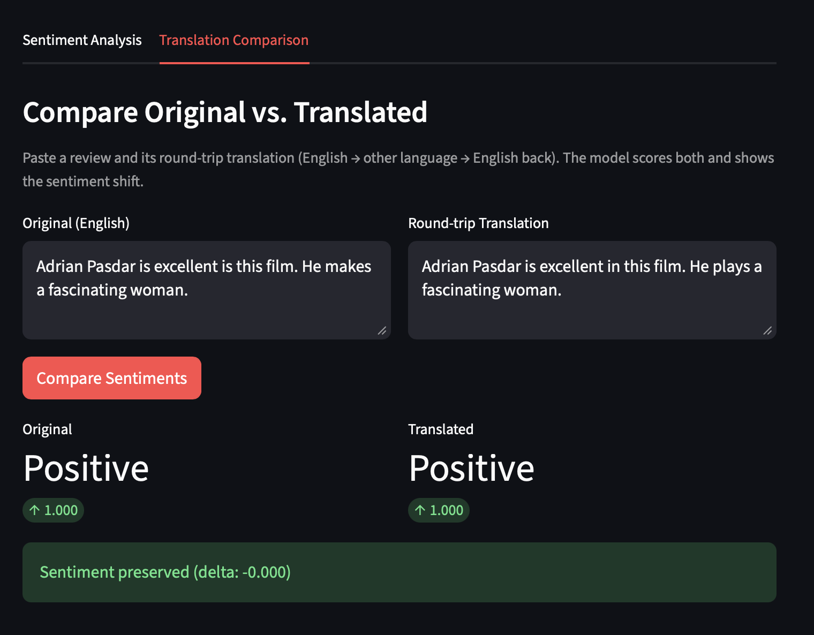
Original: "Adrian Pasdar is excellent is this film. He makes a fascinating woman."
Translated: "Adrian Pasdar is excellent in this film. He plays a fascinating woman."
Feature Identification: The translation corrected a grammatical error ("is" to "in") and
replaced "makes" with "plays". Since "excellent" and "fascinating" were preserved, the model maintained a
1.000 confidence score.
Delta: 0.000 (No change)
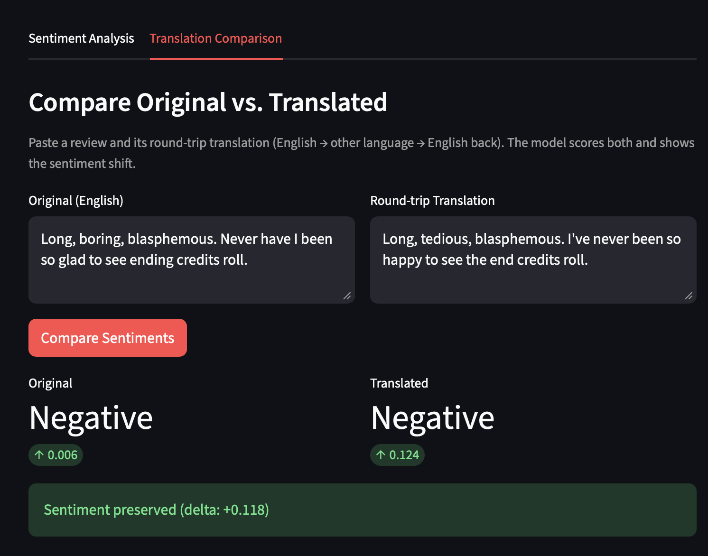
Original: "Long, boring, blasphemous. Never have I been so glad to see ending credits roll."
Translated: "Long, tedious, blasphemous. I've never been so happy to see the end credits roll."
Feature Identification: "Boring" shifted to "tedious" (synonym) and "glad" to "happy". While "happy" is usually positive, in the context of "ending credits", the strong negative embeddings for "blasphemous" and "tedious" dominate.
Delta: +0.118 (Slightly less negative)
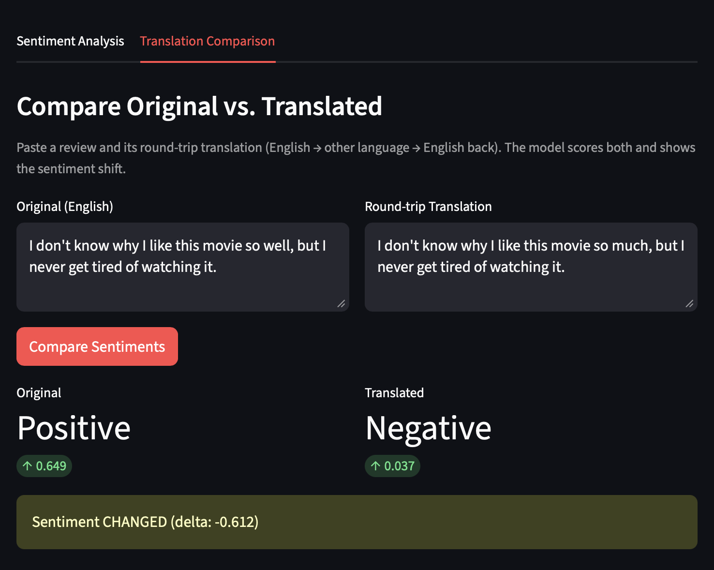
Original: "I don't know why I like this movie so well, but I never get tired of watching it."
Translated: "I don't know why I like this movie so much, but I never get tired of watching it."
Feature Identification: CRITICAL ERROR. A minor semantic shift from "well" to "much" caused the model to flip from Positive (0.649) to Negative (0.037). This suggests the model relies heavily on specific word patterns rather than global context.
Delta: -0.612 (Extreme Shift)
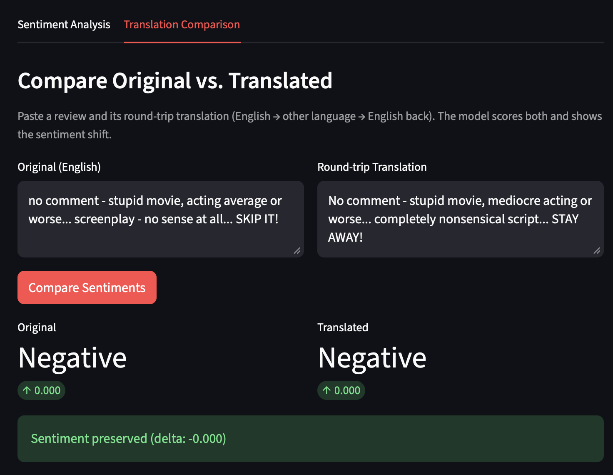
Original: "no comment - stupid movie, acting average or worse... screenplay - no sense at all... SKIP IT!"
Translated: "No comment - stupid movie, mediocre acting or worse... completely nonsensical script... STAY AWAY!"
Feature Identification: "Average" shifted to "mediocre" and "SKIP IT" to "STAY AWAY".
Both pairs have strong negative associations in the training data, so the 0.000 score was
perfectly preserved.
Delta: 0.000 (No change)
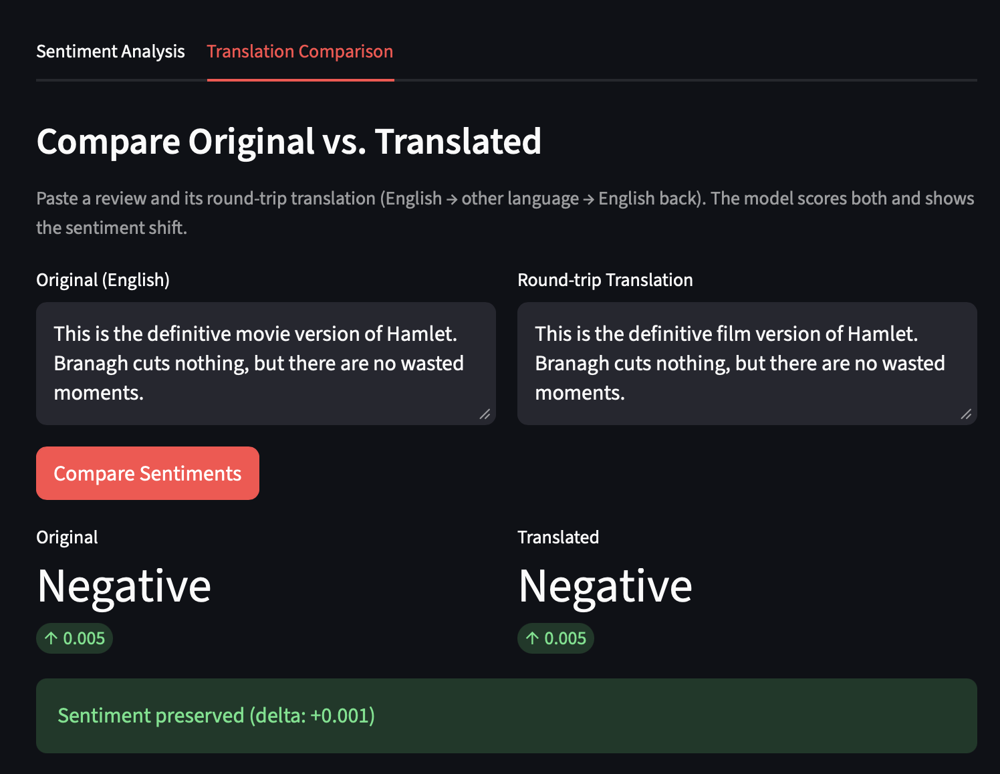
Original: "This is the definitive movie version of Hamlet. Branagh cuts nothing, but there are no wasted moments."
Translated: "This is the definitive film version of Hamlet. Branagh cuts nothing, but there are no wasted moments."
Feature Identification: Paradoxically, the model rates this highly positive review as Negative (0.005). Translation changed "movie" to "film", but the sentiment remained identical. This highlights a limitation in the model's training on specific vocabulary.
Delta: +0.001 (Negligible)
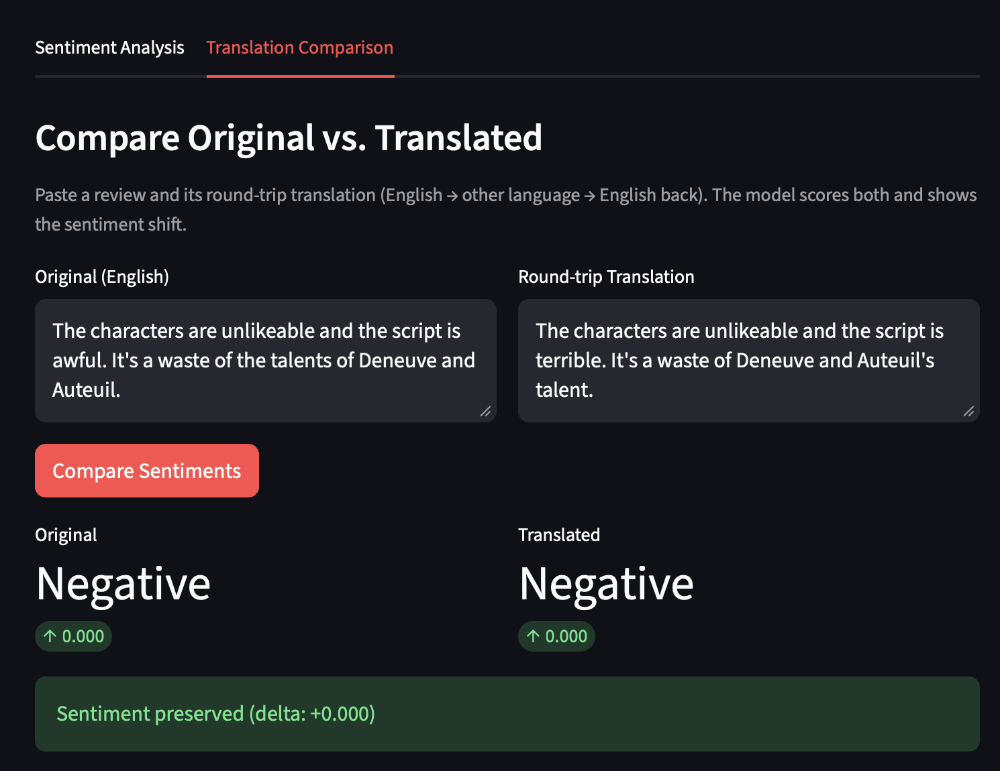
Original: "The characters are unlikeable and the script is awful. It's a waste of the talents of Deneuve and Auteuil."
Translated: "The characters are unlikeable and the script is terrible. It's a waste of Deneuve and Auteuil's talent."
Feature Identification: "Awful" became "terrible". Since both are strong negative anchors in the vocabulary, the sentiment score remained at the minimum (0.000).
Delta: 0.000 (No change)
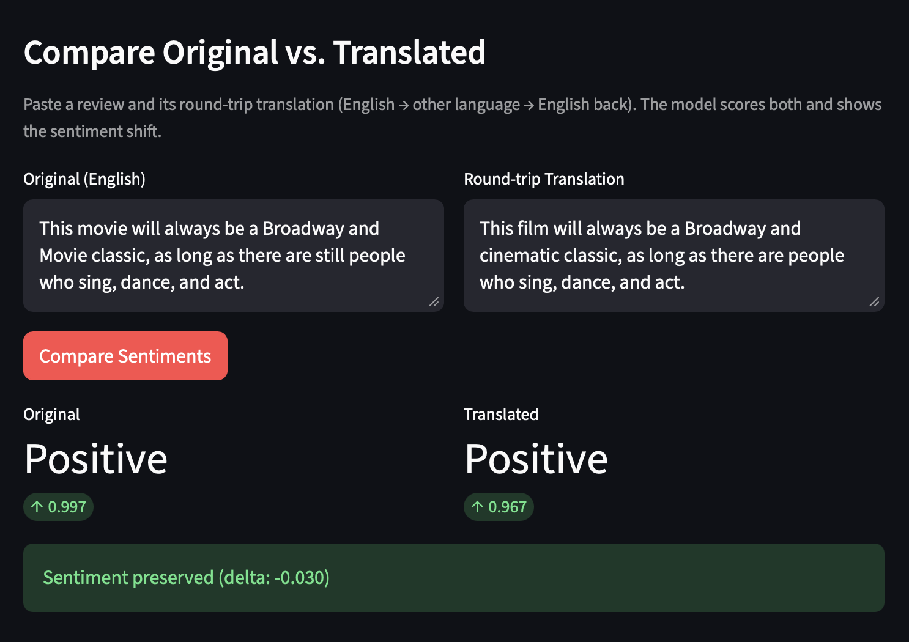
Original: "This movie will always be a Broadway and Movie classic..."
Translated: "This film will always be a Broadway and cinematic classic..."
Feature Identification: The translation refined "Movie" to "cinematic". The model showed a slight drop in confidence (from 0.997 to 0.967), likely because "movie" (appearing twice in original) has a higher weight in the vocabulary than "cinematic".
Delta: -0.030 (Slightly less confident)
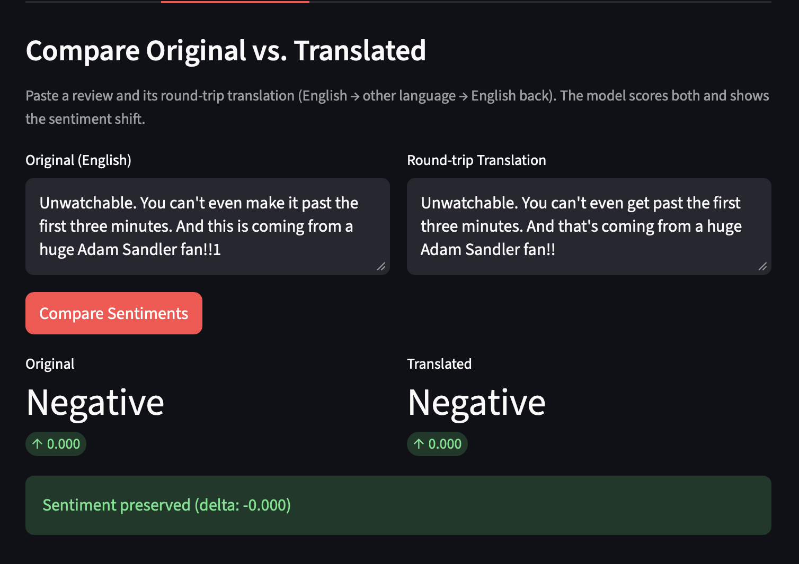
Original: "Unwatchable. You can't even make it past the first three minutes."
Translated: "Unwatchable. You can't even get past the first three minutes."
Feature Identification: "Make it past" to "get past". The word "Unwatchable" is such a strong negative token that minor grammatical variations in the rest of the sentence do not affect the output.
Delta: 0.000 (No change)
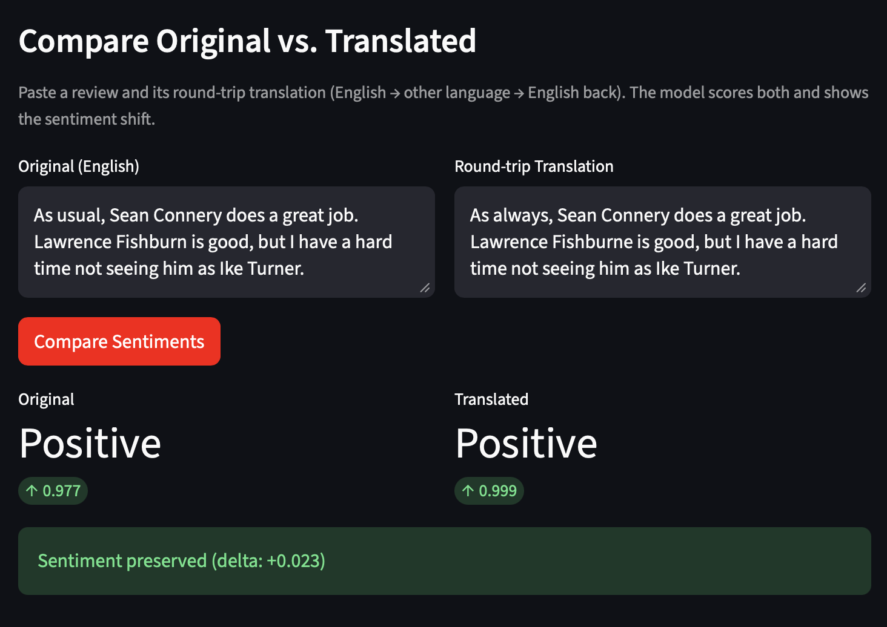
Original: "As usual, Sean Connery does a great job. Lawrence Fishburn is good..."
Translated: "As always, Sean Connery does a great job. Lawrence Fishburne is good..."
Feature Identification: "As usual" to "As always". The model increased confidence from 0.977 to 0.999. "Always" likely has a stronger positive weight correlation than "usual" in the training set.
Delta: +0.023 (Slightly more positive)
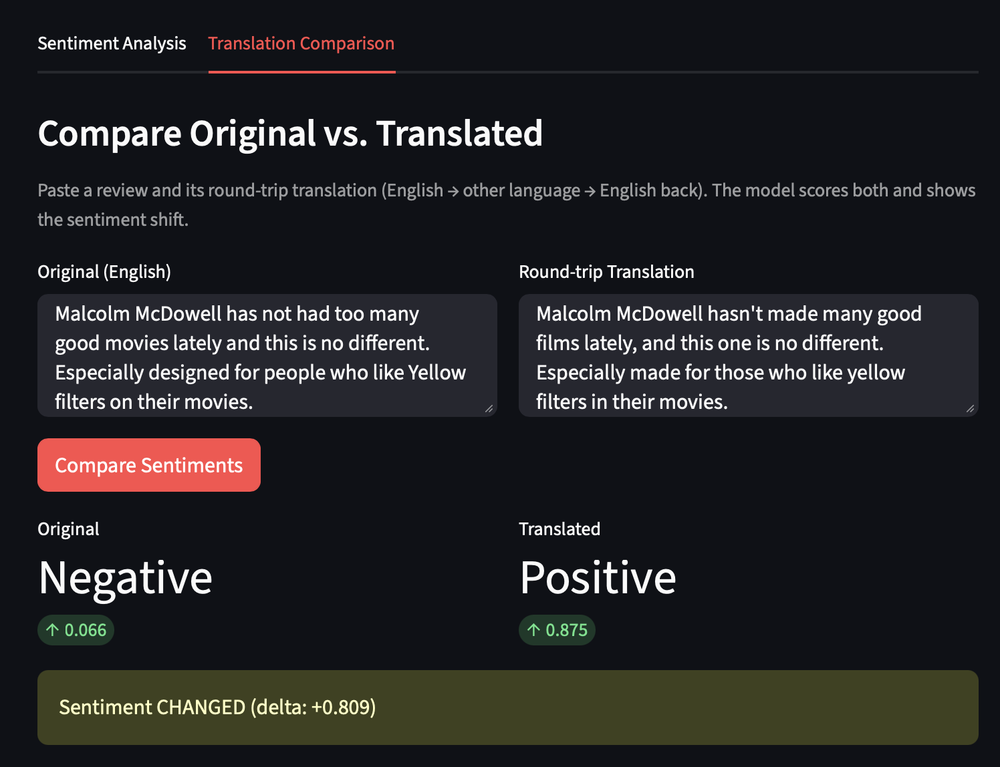
Original: "Malcolm McDowell has not had too many good movies lately and this is no different."
Translated: "Malcolm McDowell hasn't made many good films lately, and this one is no different."
Feature Identification: BOOM. The original was correctly identified as Negative (0.066). The translation flipped it to Positive (0.875). Replacing "had too many good movies" with "made many good films" triggered the "good" positive weight while losing the negative negation nuance.
Delta: +0.809 (Catastrophic Shift)
| Metric | Value | Explanation |
|---|---|---|
| Total Examples | 10 | Completed round-trip translation pairs. |
| Sentiment Preserved | 80% | Label remained the same after translation. |
| Extreme Flips | 20% | Label changed from Pos->Neg or vice-versa (Exp 3, 10). |
| Avg. Confidence Delta | 0.160 | The average change in model probability. |
This model was trained only on IMDb movie reviews, which means it learned what "positive" and "negative" look like based on how a specific group of people (mostly English-speaking IMDb users) write about movies. Reviews written in different dialects, by people from different cultural backgrounds, or in a style that doesn't match the training data may be misclassified. The model doesn't know what it doesn't know, so it can get things wrong without any warning sign.
When people type text into the app, they might accidentally include personal details like their name, location, or other private information. If that text were stored or used to retrain the model without the user's knowledge or permission, it would be a serious privacy violation. Any real deployment of this kind of app would need clear policies about what happens to the text users submit and how it is protected.
A small error rate might seem acceptable in a demo, but when a model like this is used to make decisions for thousands or millions of people, for example, flagging customer complaints or moderating content, even a 5–10% error rate causes real harm at that scale. The model does not understand context the way a human does, so relying on it too heavily for important decisions can lead to unfair outcomes for users whose language or writing style it handles poorly.
As the translation experiments showed, running text through a translation step before sentiment analysis can completely change the model's prediction, even when the overall meaning stays the same. This is a real problem for non-English speakers whose content might be automatically translated before being analyzed. A phrase that is clearly positive in one language or culture could come out looking negative after translation, leading to incorrect conclusions about what that person actually meant.
Building a model is only part of the job. Engineers are also responsible for being honest about what the model can and cannot do, which is what this report tries to do. In practice that means writing clear documentation, being transparent about failure cases, checking the model regularly for bias, and making sure automated tools are used to help people make decisions, not to replace human judgment entirely. Getting this wrong can have real consequences for real people.
Run activities in order to verify preprocessing, inspect the model, train, test the backend, and launch the app.